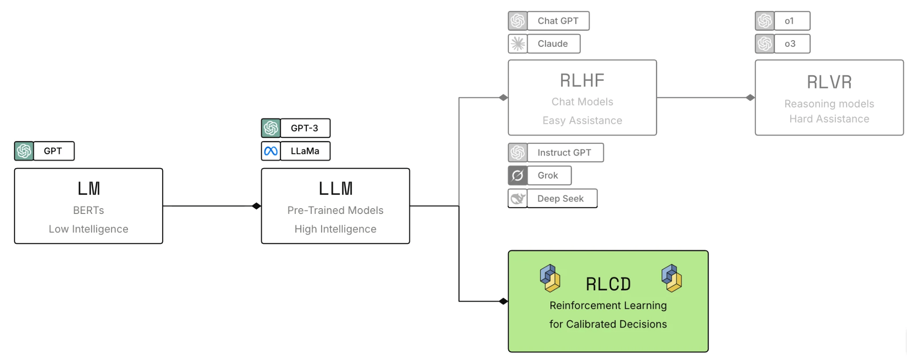
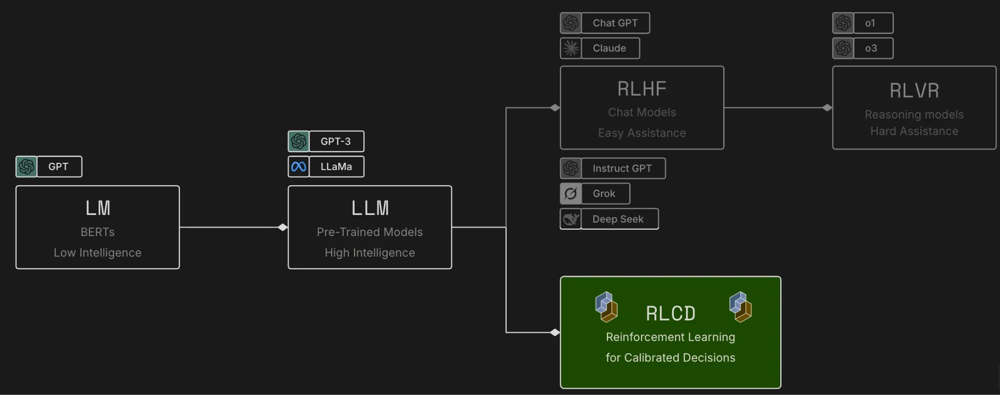
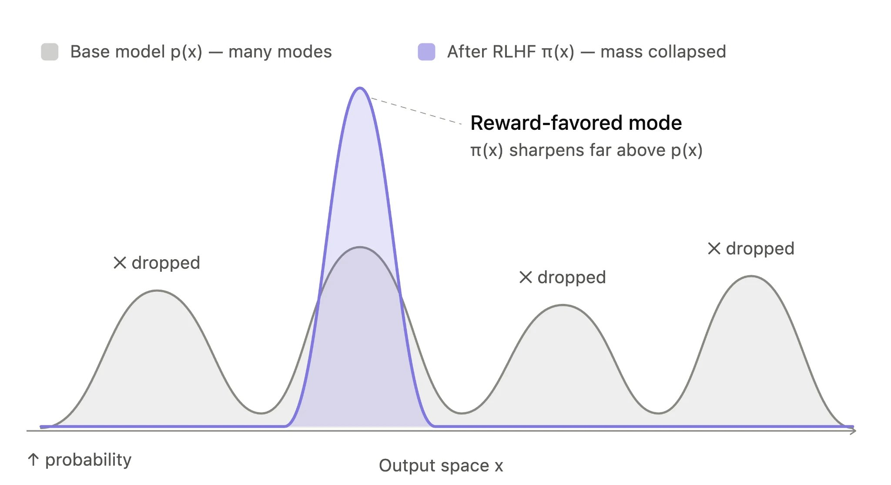
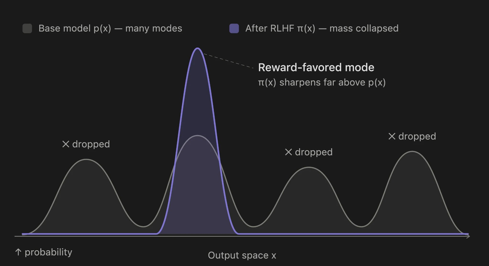

AI 入门
为什么 TypeSafe 训练具有校准概率的决策模型，而不是为生成文本进行优化。
大多数 AI 产品都围绕模型与人之间的对话构建。TypeSafe 从一个不同的押注出发：大规模自动化将由 AI 对 AI 和 AI 对软件的交互主导，因此机器接口比聊天接口更重要。
我们称之为机器原生智能（Machine Native Intelligence）：
具有软件般特性的 AI，例如结构化、可靠性、可观测性、可测试性、速度、一致性和低成本。
构建生产系统，而非造神
TypeSafe 并不试图构建一个无所不能的模型。它是为生产系统设计的——在这些系统中，代码需要一个狭窄的、可以审查并据此行动的决策。
我们的预期是，大规模 AI 自动化将更接近 99% 的机器对机器交互和 1% 的人类交互。这把设计目标从读起来令人愉悦的响应，转向在软件中表现可预测的输出。
阅读 TypeSafe 宣言。
三种训练后方法
预训练语言模型已经以两种主要方式被改造。TypeSafe 增加了第三种。这里展示 RLHF 和 RLVR 作为背景；TypeSafe 的训练路径是 RLCD。
基于人类反馈的强化学习把预训练模型变成了聊天机器人。它训练模型生成人们更偏好的响应。
可验证奖励的强化学习创造了推理模型，它们擅长数学等任务，但更慢、更昂贵。
面向校准决策的强化学习训练 TypeSafe 返回决策和校准概率，而不是生成的文本。
RLHF 曾被用于训练 InstructGPT 和 ChatGPT，并由 TypeSafe 联合创始人 Diogo Almeida 共同发明。


RLCD 与校准决策
RLCD 优化的是另一种不同的输出契约：
模型不生成文本。
它返回决策和概率。
更高的概率应当对应答案正确的更大可能性。
校准让不确定性变得可以被软件使用。对于一个校准良好的模型的多次预测：
被赋予
0.2概率的结果应当大约在 20% 的情况下发生。被赋予
0.8概率的结果应当大约在 80% 的情况下发生。被赋予
1.0概率的结果应当在 100% 的情况下发生。
这些比率描述的是一组预测，而不是对任何单个答案的保证。关于如何决定软件何时应当执行、何时应当升级，参见置信度。
RLHF 的问题
RLHF 教模型说人们偏好的话。这个目标对聊天机器人很有效，但它也可能奖励谄媚行为和听起来自信的幻觉。
偏好优化还会导致模式丢弃（mode dropping）：模型学会偏好某种特定风格，例如遵循指令，同时降低其他可能输出的概率。


一个输出可以对人很有说服力，却不足以可靠地支撑无人值守的自动化。人类偏好和机器可信度是不同的优化目标。
模式丢弃是模式坍缩（mode collapse）的较温和版本。在经典的生成对抗网络失败模式中，生成器学会反复生成同一种输出，因为那种输出能持续骗过判别器。
模式坍缩类比▾
RLHF 仍然是会话模型的良好选择。TypeSafe 的立场是：生产自动化需要一种不同的训练目标——一种以受约束的决策和校准的不确定性为中心的目标。